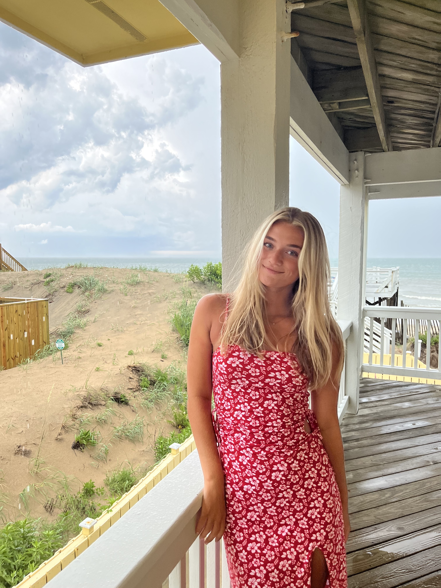

About Me
I am a dedicated leader with a great work ethic. I have strong creative skills and experience in problem solving, teamwork and management. I am seeking creative advertising or graphic design work.

Contact
- Noelle Clark
- Fairfax Station, Virginia
- noelleclark3@aol.com
- 703-615-2924
Skills
- Adobe Photoshop
- Adobe Illustrator
- Wordpress
- iMovie
- Microsoft Applications
- CPR and BLS certified
Education
James Madison University
- Harrisonburg, VA
- August 2020 - Present
- Media Arts & Design Major - 3.3 GPA
- Creative Advertising Concentration
- Writing, Rhetoric & Technical Communication Minor
- Alpha Sigma Tau Sorority
- Assistant Director of Recruitment
South County High School
- Lorton, VA
- 2016 - 2020
- National Honor Society - 3.9 GPA
- DECA State Finalist
- Varsity Swim & Dive
- Varsity Lacrosse
Experience
Breeze TV Assistant - JMU Breeze
Fall 2021
- Assisted in the production of the weekly student run news channel at JMU.
- Helped display graphics and shadowed the cameras.
Lifeguard - Millennium Pools
July 2020 - August 2021
- Ensured the safety of all guests; 100% success rate.
- Maintained the pool deck and water calibration to state and company standards.
Junior Swim Coach - Barrington HOA
May 2016 - August 2020
- Instructed kids ranging from four to ten years old in the fundamentals of swimming and teamwork.
- Planned, managed, and set up activities and events for the team.